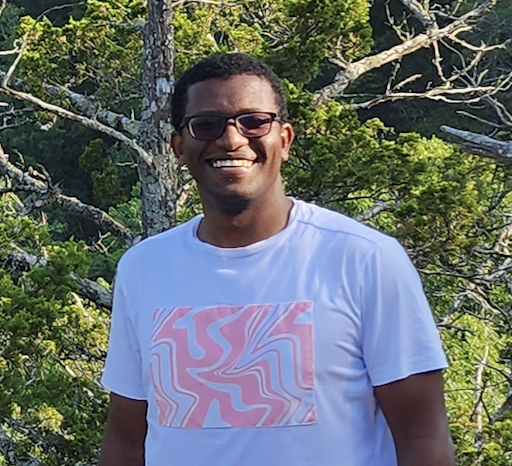
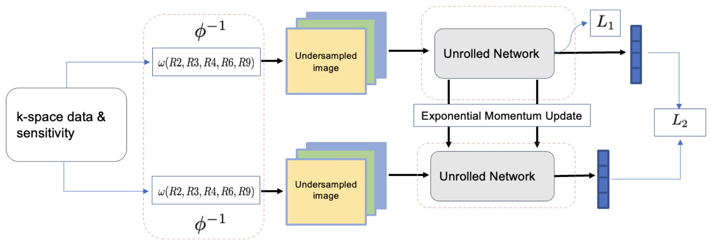
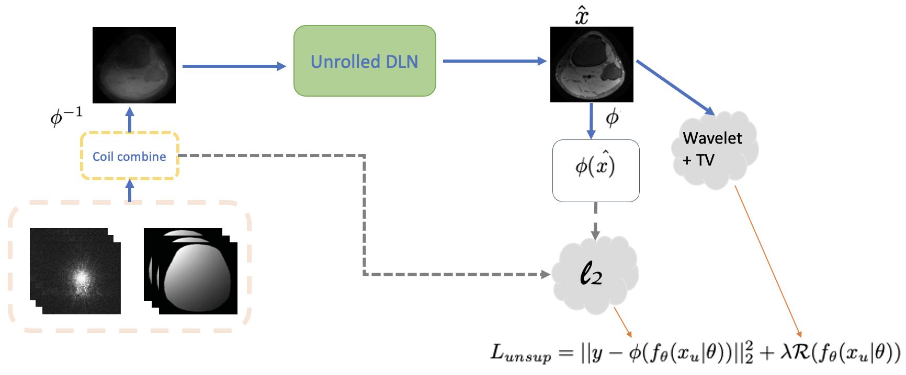
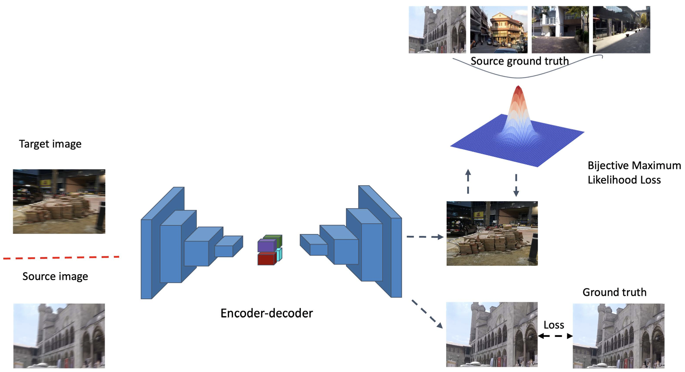
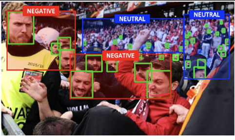
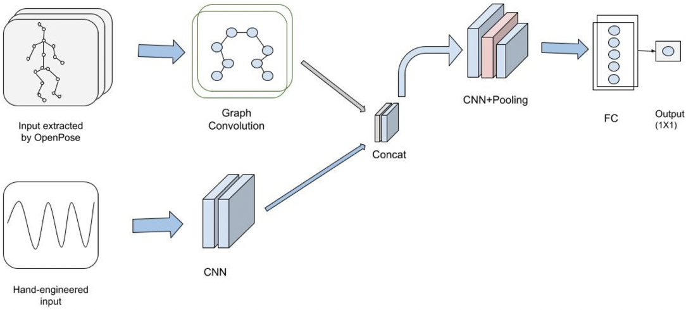
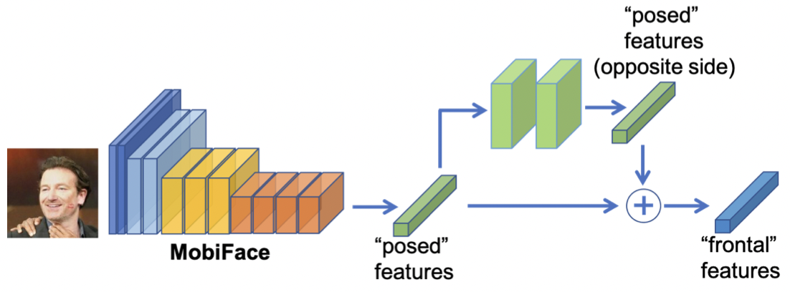

|
Ibsa Jalata
I am a Ph.D. candidate at the University of Arkansas, focusing on Computer Vision, MRI image reconstruction, and action detection and localization using an Unsupervised Deep Learning approach. In 2017, I successfully completed my M.Sc. degree in Electronics and Information Engineering from Jeonbuk National University in South Korea. Prior to that, I earned my B.Sc. degree in Electrical and Computer Engineering from Addis Ababa University in Ethiopia.
Email /
Google Scholar /
Github /
LinkedIn
|

|
|
Research
I'm interested in computer vision, machine learning and biomedical imaging. Representative papers are highlighted.
|
|

|
Learning from Oversampling: A Systematic Exploitation of oversampling to address Data Scarcity issues in Deep Learning based Magnetic Resonance Image Reconstruction
Ibsa Jalata, Reeshad Khan, Ukash Nakarmi
ISVC, 2023
To address the scarcity of training data in MR image reconstruction,
we pose the training data oversampling as a one-to-many
mapping function and introduce a new loss function based on
similarity metric that can be integrated into a DL framework.
In addition to solving the scarcity of the available data, this
approach makes the learned model more robust to different
under-sampling factors.
|
|

|
When System Model meets Image Prior: An
Unsupervised Deep Learning Architecture for
Accelerated Magnetic Resonance Imaging
Ibsa Jalata, Ukash Nakarmi
ISVC, 2023
An unsupervised deep learning framework for
accelerated MRI is proposed to overcome the limitation of
ground truth images. Our framework combines a system prior
derived from the MR acquisition model with generic image
priors to build a more effective unsupervised deep learning
framework. This approach addresses the slow sequential data
acquisition issue and accelerates MRI without relying on supervised learning.
Experimental results validate its effectiveness.
|
|

|
EQAdap: Equipollent Domain Adaptation Approach to Image Deblurring
Ibsa Jalata, Naga Chappa, Thanh-dat Troung, Pierce Helton, Chase Rainwater, Khoa Luu
IEEE-Access, 2022
The paper introduces an unsupervised domain adaptation method for image deblurring, aiming to improve generalization across different domains.
It focuses on learning a complex latent space from a source domain and applying that knowledge to an unlabeled target domain.
To address challenges with supervised methods that struggle to generalize in new environments, the paper introduces a novel Bijective Maximum Likelihood loss.
Experimental results on various datasets show that the proposed approach achieves state-of-the-art performance on standard benchmarks.
|
|

|
Non-volume preserving-based fusion to group-level emotion recognition on crowd videos
Kha Gia Quach, Ngan Lee, Chi Nhan Duong, Ibsa Jalata, Kaushik Roy, K. Luu
Pattern Recognition, 2022
The study addresses the emerging field of group-level emotion recognition (ER) in response
to the demand for evaluating emotions in large crowds, both in security and social media contexts.
The paper introduces a deep feature fusion mechanism named Non-Volume Preserving Fusion (NVPF) to
effectively capture spatial-temporal information in crowd videos.
|
|

|
Movement Analysis for Neurological and Musculoskeletal Disorders Using Graph Convolutional Neural Network
Ibsa K. Jalata, Thanh-dat Troung, Jessica L.Allen, Han-Seok Seo, K. Luu
Future Internet-MDPI, 2021
The project introduces video-based neural network for accurate impaired movement analysis in
neurological and musculoskeletal disorders, replacing expensive motion capture methods.
Graph convolutional and 1D convolutional networks enhance correlation with ground truth gait measures and enable faster training.
Offers cost-effective alternative for patient-specific impairment identification
|
|

|
Mobiface: A lightweight deep learning face recognition on mobile devices
Chi Nhan Duong, Kha Gia Quach, Ibsa Jalata, Ngan Le, K. Luu
IEEE 10th international conference on BTAS , 2019
The paper discusses the challenge of deploying accurate deep neural network-based face recognition on mobile
devices due to computational limitations. To address this, a lightweight network named MobiFace is introduced,
focusing on efficient memory usage, a small number of weights, and low-cost operators for mobile deployment
|
|
{kind=link}